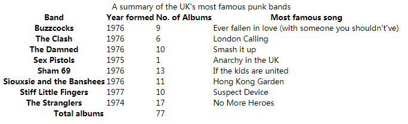

16-样式化表格
任务目标：
学习如何有效地对HTML表格进行样式化。
未添加样式效果图：

1、调整表宽、列宽和表标题、表单元格的数据项空间
table {
table-layout: fixed;
width: 100%;
border-collapse: collapse;
border: 3px solid purple;
}
thead th:nth-child(1) {
width: 30%;
}
thead th:nth-child(2) {
width: 20%;
}
thead th:nth-child(3) {
width: 15%;
}
thead th:nth-child(4) {
width: 35%;
}
th, td {
padding: 20px;
}
table-layout: fixed;
使用table-layout：fixed可以根据th的宽度调整列的大小,这就是为什么我们使用了thead th:nth-child(n) 选择四个不同的标题，设置width来轻松设置列的宽度。
使用百分比，这样设计就更有响应性。
width: 100%;
将表格与一个100%的width结合在一起，这意味着表格将填充它放入的任何容器，并且响应得很好（虽然仍然需要更多的工作来让表格在窄屏宽度上看起来很好）。

border-collapse: collapse; ，使表元素边框合并，让边框的间隔减少为一条

border: 3px solid purple;
整个表中放置了一个border，这是必要的，因为我们将在后面为表页眉和页脚设置一些边框——当你在表格外面没有一个边框的时候，它看起来很奇怪，而且是不连贯的，最后会有空隙。
th, td {
padding: 20px;
}
在<th>和<td>元素上设置了一些padding——这使<th>、<td>里的数据项有了一些空间，使表看起来更加清晰。
效果图：

2、字体样式与文本布局
html {
font-family: 'helvetica neue', helvetica, arial, sans-serif;
}
thead th, tfoot th {
font-family: 'Rock Salt', cursive;
}
th {
letter-spacing: 2px;
}
td {
letter-spacing: 1px;
}
tbody td {
text-align: center;
}
tfoot th {
text-align: right;
}
我们通常会对字体样式进行调整，使其更易于阅读：
第一、第二个规则：设置了一个全局的sans-serif字体栈，这纯粹是一种风格上的选择。在<thead>和<tfoot>元素的标题上设置了自定义字体，这是一种很不错的、很有朋克风格的外观。
第三个规则：在th标题和td单元格上设置了一些letter-spacing，因为我们觉得它有助于提高可读性。再次强调，这主要是一种风格上的选择。
对<tbody>的<td>文本进行了居中对齐，使<td>文本与<th>标题对齐。（顺便一提：<td>text-align默认是left。<th>默认粗体，可以区分<td>与<th>）
对<tfoot>中的<th>标题进行了右对齐，以便接近它的数据。
效果图：

3、添加背景图片与渐变
thead, tfoot {
background: url(leopardskin.jpg);
color: white;
text-shadow: 1px 1px 1px black;
}
thead th, tfoot th, tfoot td {
background: linear-gradient(to bottom, rgba(0,0,0,0.1), rgba(0,0,0,0.5));
border: 3px solid purple;
}
第一个规则：一个background-image添加到<thead>和<tfoot>。将页眉和页脚的所有文本颜色color更改为白色(并给文本一个text-shadow)确保文字与背景形成鲜明的对比，使得它是可读的。
第二个规则：为页眉的<th>和页脚的<th>和 <td>添加一个线性渐变的漂亮纹理，并提供一个明亮的紫色边框。
我们可以在<thead>和 <tfoot>元素上使用多个背景图片和线性渐变，但是因为考虑到不支持多个背景图像或线性渐变的老浏览器，我们决定分开使用背景图片和渐变。
效果图：

4、斑马条纹图案
交替的颜色行，使表中的不同数据行更容易解读。
tbody tr:nth-child(odd) {
background-color: #ff33cc;
}
tbody tr:nth-child(even) {
background-color: #e495e4;
}
tbody tr {
background-image: url(noise.png);
}
table {
background-color: #ff33cc;
}
第一、第二个规则：我们给奇数行和偶数行不同的(耀眼的)颜色。
第三个规则：我们还为所有行添加了一个重复的背景图块。
第四个规则：给整个表格提供了一个纯的背景颜色，这样浏览器不支持:nth-child选择器仍然有它们的正文行的背景。
效果图：

5、样式化标题
caption {
font-family: 'Rock Salt', cursive;
padding: 20px;
font-style: italic;
caption-side: bottom;
color: #666;
text-align: right;
letter-spacing: 1px;
}
caption-side属性被赋予了一个底部bottom的值，导致标题被放置在表格的底部，与其他声明一起提供了最后的外观。
效果图：